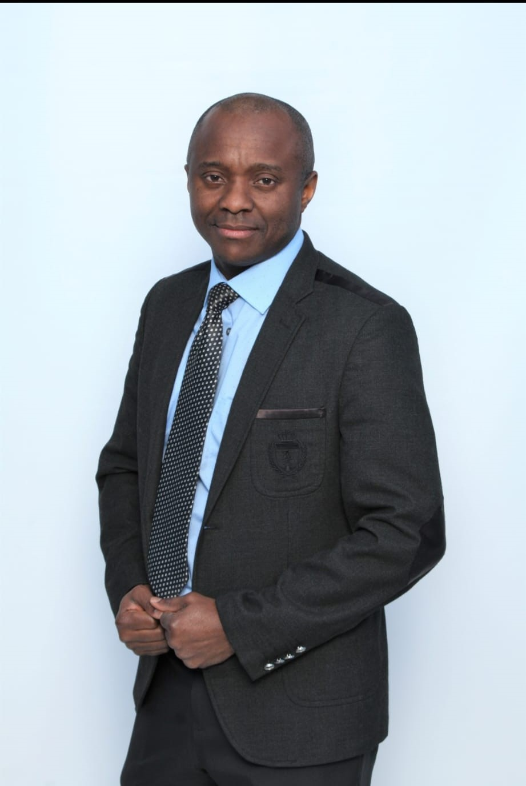
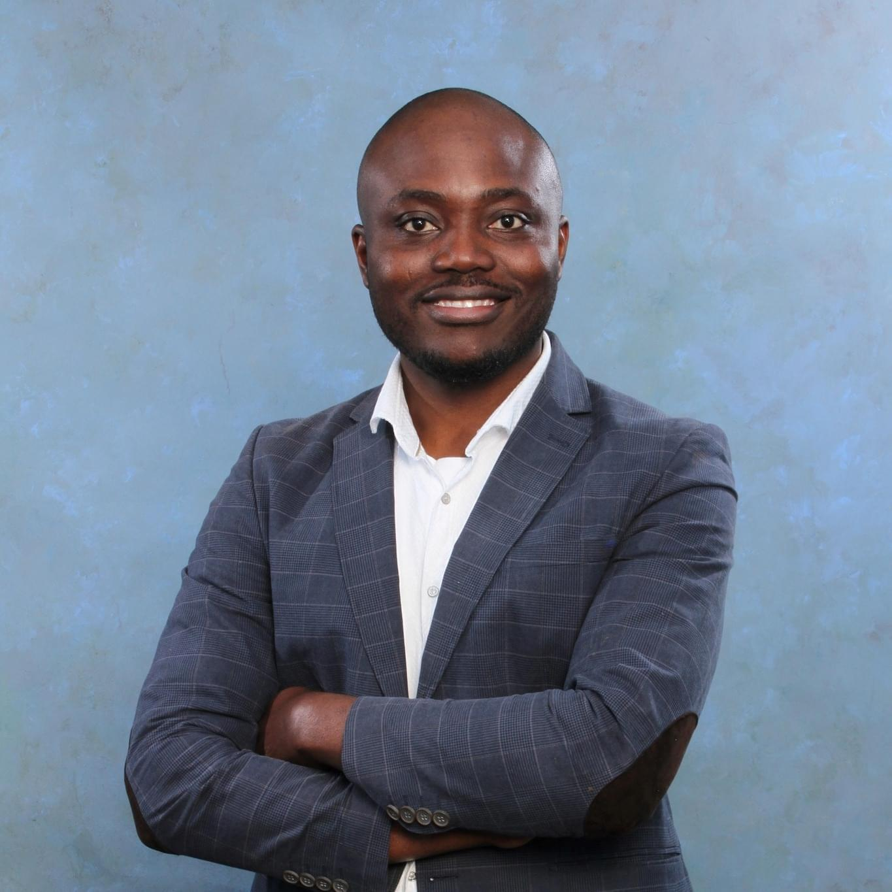
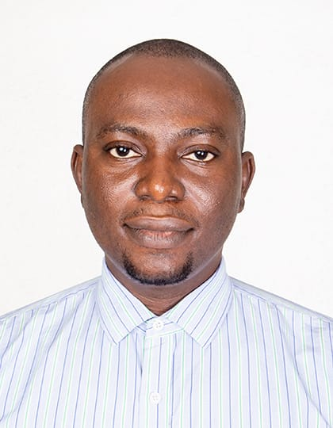
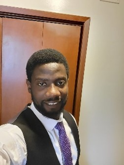
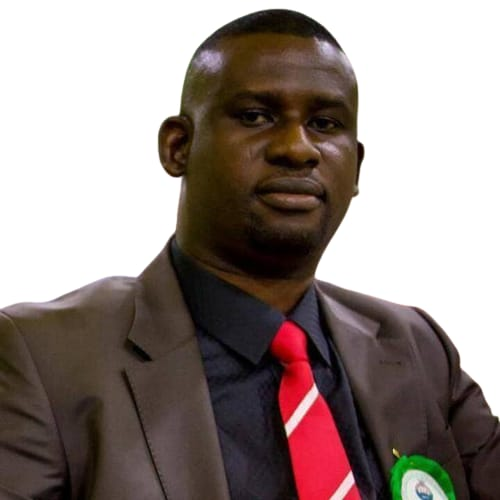
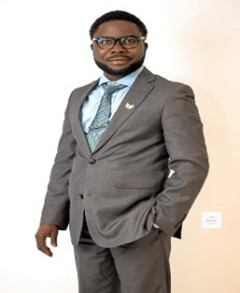

The Executives
The Executive Committee consists of the Chair, the Chair-Elect, the First Vice Chair/Secretary, the Second Vice Chair/Treasurer, and the Immediate Past Chair. The Executive Committee exercises powers of the Board of Directors between meetings of the Board.
The Executive Director is a non-voting member of the Executive Committee.

OLASENI JAMES ASHAYE, E.I.T., PMP
CHAIRMAN
James Ashaye, the Chairman for the chapter,
is a highly experienced civil engineer and a certified project manager with
20+ years of experience. He holds a master's degree in civil engineering and
a Post Baccalaureate Diploma in Engineering from the University of Manitoba.
He is currently a Structures Engineer at Manitoba Transportation and Infrastructure.
He specializes in the construction management of minor structure rehabilitation, major
structures projects - involving bridge construction, designs, reviews and inspections.
James is ardent about teamwork and knowledge sharing. He loves tennis sport.

EMEKA MAXWELL UGBOR, EIT, PMP
VICE CHAIRMAN
Emeka Maxwell Ugbor, Vice Chair of the Nigerian Members Chapter of Engineers Geoscientists Manitoba, is an accomplished professional, with over 17 years experience in Civil engineering, construction, and project management across three continents. He holds a Bachelor's degree in Building and a Master of Science degree in Construction Management and is also a Licensed Civil Engineer in the State of Qatar.
Maxwell is not only a professional but also an author, a coach, a
devout Christian and a father. His hobbies include writing, cycling, and meeting people.

KOYA AJIBOLA, E.I.T, PMP
TREASURER
Ajibola Koya, Treasurer of the Nigerian Members Chapter of Engineers Geoscientists Manitoba; is an experienced Engineer in Quality Management System and Project Management with over 10 years coordination achievements in Engineering, Procurement & Construction (EPC) Projects.
He holds a Bachelor’s degree in Chemical and Polymer Engineering and Master of Process Engineering degree. Also, he is a certified Project Management Professional (PMP).
Currently, he works with Brenntag Canada Inc. where he is responsible for quality and project coordination and his early career started from TREVI Foundations Nigeria Limited, a subsidiary of TREVI S.p.A., where he worked in various capacities to the success of his Project teams. Ajibola is
interested in meeting people, and he likes playing chess at leisur

VICTOR ADEBAYO, E.I.T.
SECRETARY
Victor, Secretary of the Nigerian Members Chapter
of Engineers Geoscientists Manitoba, is a Civil Engineer with 10+ years
of diverse experience. He holds a Bachelor's and Master's in civil engineering
and is pursuing a Construction Management degree at Red River College.
A certified professional with memberships in EGM, CTTAM, COREN, NSE, and PMI,
Victor is passionate about knowledge empowerment. His
interests include meeting people, reading, traveling, creative writing, and soccer.
LILIAN EZEOGBULAFOR, E.I.T.
ASST SECRETARY
My name is Lilian Ezeogbulafor, the Assistant Secretary for this chapter, with
a Bachelor's degree (B.ENG) in Mechanical Engineering and a Post-Baccalaureate Diploma
from the University of Manitoba through the IEEQ program. I am also a certified Project
Management Professional (PMP).
With 5 years of experience in mechanical design and project management, I have
successfully applied my engineering expertise to various projects. My qualifications
and experience enable me to drive innovation and excellence in any engineering team.
PRISCA NWACHUKWU, E.I.T.
PUBLIC RELATION OFFICER
Prisca Nwachukwu, MSc Civil Engineering, is a Civil Engineer EIT with over five years of experience in engineering and project management. She holds advanced degrees from Coventry University United Kingdom and Nnamdi Azikiwe University. Currently a staff at Shared Health Manitoba, she has also excelled as a Logistic Manager at Ellatrio Concept and Project Manager/ Co-proprietor at Danis Provider Concept. An active member of Engineers Geoscientist Manitoba and the Project Management Institute,
Prisca is dedicated to continuous improvement and collaboration

ADEREMI STEPHEN ADEOYE, E.I.T.
ASST PUBLIC RELATION OFFICER

JOHNSON AINA, P. Engr
IMMEDIATE PAST CHAIR (IPC- EX-OFFICIAL)
Johnson Aina, Former-Chair of the Nigerian Members
Chapter of Engineers Geoscientists Manitoba, is a highly experienced
engineer with over 12 years in project management. Currently a Project Manager
at City of Winnipeg Transit, he holds a first-class bachelor's degree in mechanical
engineering and a master's degree in mechanical and materials engineering.
His career spans roles at Master Rand Cabinets Inc.,
StandardAero Limited, and Motor Coach Industries.
The Sub-Committees
Membership IT and Communications (M.I.C) Committee.
- James Ashaye - Committee Chairman
- Chukwudi Obiefuna
- Yekini Yusuf
- Adedamola Aromiwura
- Akeem Adigun
- Taofeek Mustapha
Education and Training Committee
- Victor Adebayo - Committee Chairman
- Yusuf Salami
- Yekini Yusuf
- Maxwell E. Ugbor
- Vincent Ogundare
Scholarship Committee Meeting
- Onis Sampson - Committee Chairman
- Oladipo Olagunoye
- Olukoyejo Ogundare
- Michael Afolabi
ADHOC Sub-Committees:
A. Electoral Commitees Committee
- Victor Adindu, P.Eng. - Electoral Committee Chairman
- Lilian Ezeogbulafor, EIT - Committee Secretary
- Leonard Ojieabu, EIT, - Social Media Manager
- Yemi Akinola, EIT - Technology Platform Coordinator
- Ezenne Eke, EIT - Technology Platform Coordinator
- Kelvin Agbarakwe, EIT
- Taofeek Mustapha, EIT.
B.AGM/Handover Committee
- Gbolade Oladapo, P.Eng - Committee Chairman
- Onis Sampson, P.Eng
- Olusegun Oyekunle, P.Eng
- Kelvin Agbarakwe, EIT
- Michael Oladokun, EIT
- Olufayowa Onochie, EIT
- Wasiu Adeshina, EIT

.jpg)